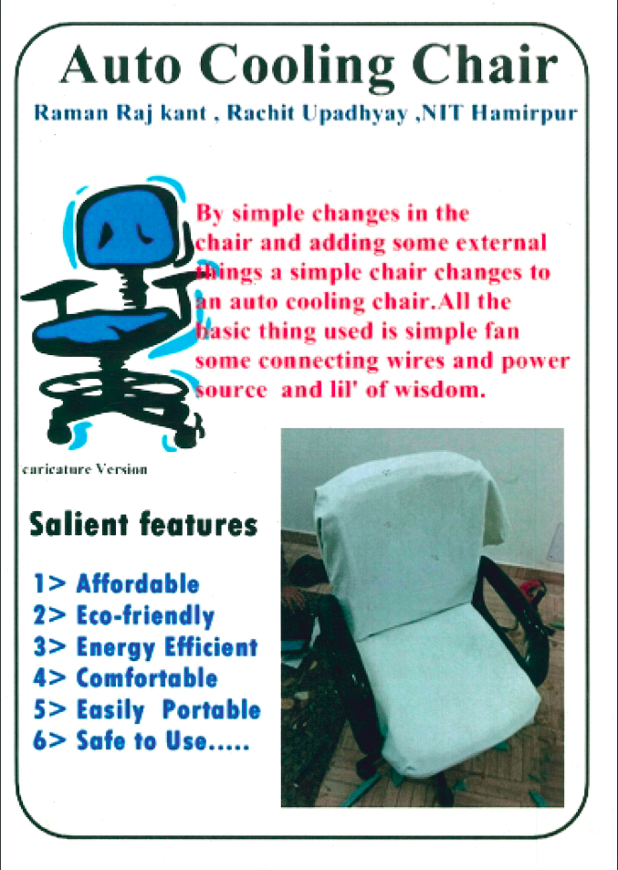

04 2015
Auto Cooling Chair

Throughtout the 21st century , almost 6 billion people used to work for 10-12 hours either in private sector or in any other sector and they had to sit on the chair for most of the time.
Sitting on a chair for a long time either in working hours or in meetings makes the employees or clients uncomfortable and irritated due to sweating in their thighs, back and bottom part.Basicallly every part of the body that is in direct contact with chair.All this results in sluggish behaviour and this compromises the pace and efficiency of work being done.
To overcome these problems Auto Cooling Chair comes to role ,which is known as auto cooling This chair is quite similar to the other office chairs but differs in its features.the cooling mechanism of this chair avoids the sweating and the the worker used to feel fresh for a long and the problems like skin rashes due to sweating are also avoided. The cooling mechanism used is very quite and smooth. A major point which comes to mind is the power consuption of that chair,and in this case too , you can have a sigh of relief because its total power consuption is only 4 units per month.
The price of this chair will be the same as the normal office chairs.So it will be a wise decision to choose comfort on same price.
Back to Blog